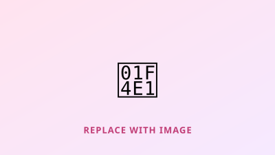

VLBI
CASA
Python
VLBI Data Reduction Pipeline
[Summarize the VLBI data reduction work done as part of the DARA programme — what data, what pipeline steps, what you found.]
[Add link to writeup or repository →]